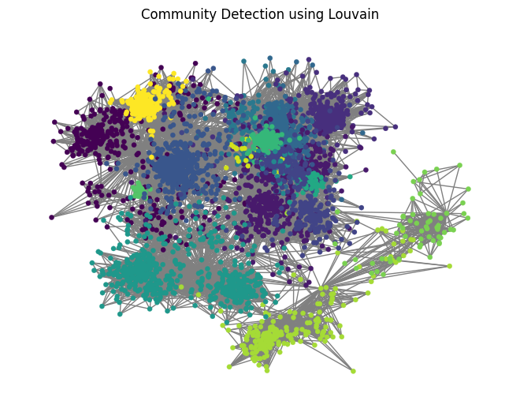
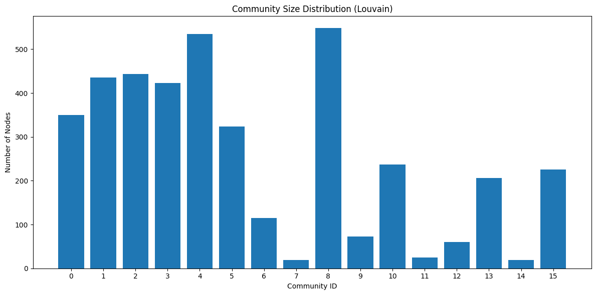
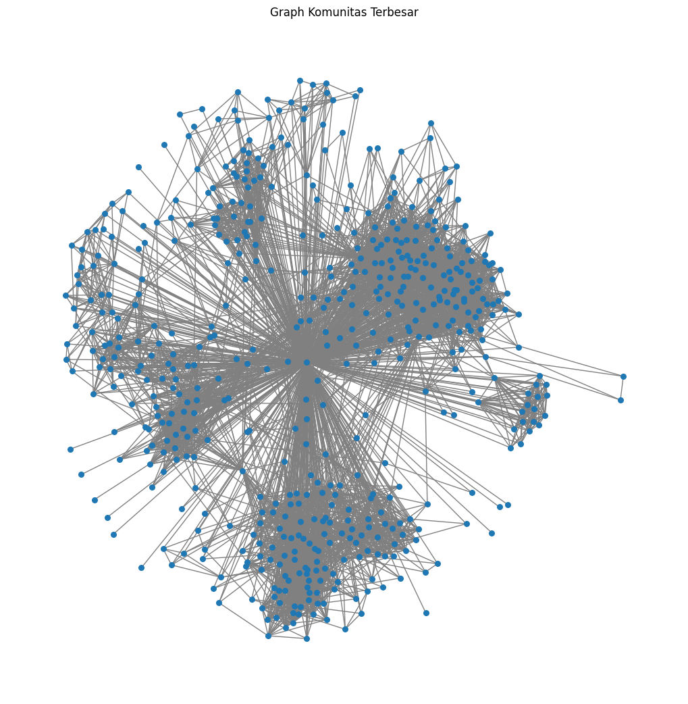

Facebook#
Install dan Import Library#
!pip uninstall community
!pip install python-louvain
Found existing installation: community 1.0.0b1
Uninstalling community-1.0.0b1:
Would remove:
/usr/local/lib/python3.12/dist-packages/community-1.0.0b1.dist-info/*
/usr/local/lib/python3.12/dist-packages/community/*
Would not remove (might be manually added):
/usr/local/lib/python3.12/dist-packages/community/community_louvain.py
/usr/local/lib/python3.12/dist-packages/community/community_status.py
Proceed (Y/n)? y
Successfully uninstalled community-1.0.0b1
Requirement already satisfied: python-louvain in /usr/local/lib/python3.12/dist-packages (0.16)
Requirement already satisfied: networkx in /usr/local/lib/python3.12/dist-packages (from python-louvain) (3.6)
Requirement already satisfied: numpy in /usr/local/lib/python3.12/dist-packages (from python-louvain) (2.0.2)
import networkx as nx
import community.community_louvain as community_louvain
import matplotlib.pyplot as plt
import pandas as pd
from google.colab import drive
drive.mount('/content/drive')
Drive already mounted at /content/drive; to attempt to forcibly remount, call drive.mount("/content/drive", force_remount=True).
import networkx as nx
file = "/content/drive/MyDrive/PPW/UAS/FB/facebook_combined.txt.gz"
G_fb = nx.read_edgelist(file, nodetype=int)
print("Nodes :", G_fb.number_of_nodes())
print("Edges :", G_fb.number_of_edges())
Nodes : 4039
Edges : 88234
#Algoritma Louvain
print("\nRunning Louvain algorithm...")
hasil = community_louvain.best_partition(G_fb)
jumlah_komunitas = len(set(hasil.values()))
print("Total Communities Detected:", jumlah_komunitas)
Running Louvain algorithm...
Total Communities Detected: 16
print("\nRunning Louvain algorithm...")
hasil = community_louvain.best_partition(G_fb)
jumlah_komunitas = len(set(hasil.values()))
print("Total Communities Detected:", jumlah_komunitas)
Running Louvain algorithm...
Total Communities Detected: 16
#Mengitung Modularity
from community.community_louvain import modularity
nilai_modularity = modularity(hasil, G_fb)
print("\nModularity Score :", nilai_modularity)
Modularity Score : 0.8349315626306786
#Menyimpan Hasil csv
# 3. Save Results
df = pd.DataFrame({
"node": list(hasil.keys()),
"community": list(hasil.values())
})
df.to_csv("/content/drive/MyDrive/PPW/UAS/FB/facebook_louvain_result.csv", index=False)
print("\nHasil komunitas disimpan ke: facebook_louvain_result.csv")
Hasil komunitas disimpan ke: facebook_louvain_result.csv
fb_louvain_result = pd.read_csv("/content/drive/MyDrive/PPW/UAS/FB/facebook_louvain_result.csv")
fb_louvain_result
| node | community | |
|---|---|---|
| 0 | 0 | 0 |
| 1 | 1 | 0 |
| 2 | 2 | 0 |
| 3 | 3 | 0 |
| 4 | 4 | 0 |
| ... | ... | ... |
| 4034 | 4034 | 12 |
| 4035 | 4035 | 12 |
| 4036 | 4036 | 12 |
| 4037 | 4037 | 12 |
| 4038 | 4038 | 12 |
4039 rows × 2 columns
#Visualisasi graph
# 4. (Optional) Visualisasi
visualize = True
if visualize:
pos = nx.spring_layout(G_fb, seed=42)
nx.draw(
G_fb,
pos,
node_size=20,
node_color=[hasil[n] for n in G_fb.nodes()],
cmap=plt.get_cmap("viridis"),
edge_color="gray",
linewidths=0.2
)
plt.title("Community Detection using Louvain")
plt.show()

temukan komunitas
import pandas as pd
import numpy as np
import matplotlib.pyplot as plt
from collections import Counter
from IPython.display import display
# 1) Load hasil Louvain
path = "/content/drive/MyDrive/PPW/UAS/FB/facebook_louvain_result.csv"
df = pd.read_csv(path)
# 2) Hitung ukuran komunitas
community_sizes = Counter(df["community"])
# 3) Buat DataFrame statistik
stats_df = pd.DataFrame({
"Community ID": list(community_sizes.keys()),
"Size": list(community_sizes.values())
}).sort_values(by="Size", ascending=False).reset_index(drop=True)
# 4) Statistik ringkasan
total_nodes = len(df)
total_communities = len(community_sizes)
largest = stats_df.iloc[0].to_dict()
smallest = stats_df.iloc[-1].to_dict()
avg_size = stats_df["Size"].mean()
median_size = stats_df["Size"].median()
std_size = stats_df["Size"].std()
summary = {
"Total Nodes": int(total_nodes),
"Total Communities": int(total_communities),
"Largest Community": largest,
"Smallest Community": smallest,
"Average Size": float(round(avg_size, 4)),
"Median Size": float(median_size),
"Std Dev Size": float(round(std_size, 4))
}
# 5) Tampilkan tabel & ringkasan
print("=== Community Statistics Summary ===")
for k, v in summary.items():
print(f"{k}: {v}")
print("\n=== Table: community sizes (sorted desc) ===")
display(stats_df)
=== Community Statistics Summary ===
Total Nodes: 4039
Total Communities: 16
Largest Community: {'Community ID': 8, 'Size': 548}
Smallest Community: {'Community ID': 7, 'Size': 19}
Average Size: 252.4375
Median Size: 231.5
Std Dev Size: 188.4792
=== Table: community sizes (sorted desc) ===
| Community ID | Size | |
|---|---|---|
| 0 | 8 | 548 |
| 1 | 4 | 535 |
| 2 | 2 | 443 |
| 3 | 1 | 436 |
| 4 | 3 | 423 |
| 5 | 0 | 350 |
| 6 | 5 | 324 |
| 7 | 10 | 237 |
| 8 | 15 | 226 |
| 9 | 13 | 206 |
| 10 | 6 | 115 |
| 11 | 9 | 73 |
| 12 | 12 | 60 |
| 13 | 11 | 25 |
| 14 | 14 | 19 |
| 15 | 7 | 19 |
import pandas as pd
import matplotlib.pyplot as plt
from collections import Counter
# Load the uploaded file
path = "/content/drive/MyDrive/PPW/UAS/FB/facebook_louvain_result.csv"
df = pd.read_csv(path)
# Count community sizes
community_sizes = Counter(df['community'])
# Prepare data
communities = list(community_sizes.keys())
sizes = list(community_sizes.values())
# Plot
plt.figure(figsize=(12, 6))
plt.bar(communities, sizes)
plt.xlabel("Community ID")
plt.ylabel("Number of Nodes")
plt.title("Community Size Distribution (Louvain)")
plt.xticks(communities)
plt.tight_layout()
plt.show()

keluarkan anggota setiap komunitas
community_groups = {}
for index, row in df.iterrows():
community_groups.setdefault(row["community"], []).append(row["node"])
# tampilkan anggota komunitas
for cid, members in community_groups.items():
print(f"\nKomunitas {cid} | Jumlah anggota: {len(members)}")
print(members)
Komunitas 0 | Jumlah anggota: 350
[np.int64(0), np.int64(1), np.int64(2), np.int64(3), np.int64(4), np.int64(5), np.int64(6), np.int64(7), np.int64(8), np.int64(9), np.int64(10), np.int64(11), np.int64(12), np.int64(13), np.int64(14), np.int64(15), np.int64(16), np.int64(17), np.int64(18), np.int64(19), np.int64(20), np.int64(21), np.int64(22), np.int64(23), np.int64(24), np.int64(25), np.int64(26), np.int64(27), np.int64(28), np.int64(29), np.int64(30), np.int64(31), np.int64(32), np.int64(33), np.int64(35), np.int64(36), np.int64(37), np.int64(38), np.int64(39), np.int64(40), np.int64(41), np.int64(42), np.int64(43), np.int64(44), np.int64(45), np.int64(46), np.int64(47), np.int64(48), np.int64(49), np.int64(50), np.int64(51), np.int64(52), np.int64(53), np.int64(54), np.int64(55), np.int64(56), np.int64(57), np.int64(58), np.int64(59), np.int64(60), np.int64(61), np.int64(62), np.int64(63), np.int64(64), np.int64(65), np.int64(66), np.int64(67), np.int64(68), np.int64(69), np.int64(70), np.int64(71), np.int64(72), np.int64(73), np.int64(74), np.int64(75), np.int64(76), np.int64(77), np.int64(78), np.int64(79), np.int64(80), np.int64(81), np.int64(82), np.int64(83), np.int64(84), np.int64(85), np.int64(86), np.int64(87), np.int64(88), np.int64(89), np.int64(90), np.int64(91), np.int64(92), np.int64(93), np.int64(94), np.int64(95), np.int64(96), np.int64(97), np.int64(98), np.int64(99), np.int64(100), np.int64(101), np.int64(102), np.int64(103), np.int64(104), np.int64(105), np.int64(106), np.int64(108), np.int64(109), np.int64(110), np.int64(111), np.int64(112), np.int64(113), np.int64(114), np.int64(115), np.int64(116), np.int64(117), np.int64(118), np.int64(119), np.int64(120), np.int64(121), np.int64(122), np.int64(123), np.int64(124), np.int64(125), np.int64(126), np.int64(127), np.int64(128), np.int64(129), np.int64(130), np.int64(131), np.int64(132), np.int64(133), np.int64(134), np.int64(135), np.int64(137), np.int64(138), np.int64(139), np.int64(140), np.int64(141), np.int64(142), np.int64(143), np.int64(144), np.int64(145), np.int64(146), np.int64(147), np.int64(148), np.int64(149), np.int64(150), np.int64(151), np.int64(152), np.int64(153), np.int64(154), np.int64(155), np.int64(156), np.int64(157), np.int64(158), np.int64(159), np.int64(160), np.int64(161), np.int64(162), np.int64(163), np.int64(164), np.int64(165), np.int64(166), np.int64(167), np.int64(168), np.int64(169), np.int64(170), np.int64(171), np.int64(172), np.int64(174), np.int64(175), np.int64(176), np.int64(177), np.int64(178), np.int64(179), np.int64(180), np.int64(181), np.int64(182), np.int64(183), np.int64(184), np.int64(185), np.int64(186), np.int64(187), np.int64(188), np.int64(189), np.int64(190), np.int64(191), np.int64(192), np.int64(193), np.int64(194), np.int64(195), np.int64(196), np.int64(197), np.int64(199), np.int64(200), np.int64(201), np.int64(202), np.int64(203), np.int64(204), np.int64(205), np.int64(206), np.int64(207), np.int64(208), np.int64(209), np.int64(210), np.int64(211), np.int64(212), np.int64(213), np.int64(214), np.int64(215), np.int64(216), np.int64(217), np.int64(218), np.int64(219), np.int64(220), np.int64(221), np.int64(222), np.int64(223), np.int64(224), np.int64(225), np.int64(226), np.int64(227), np.int64(228), np.int64(229), np.int64(230), np.int64(231), np.int64(232), np.int64(233), np.int64(234), np.int64(235), np.int64(236), np.int64(237), np.int64(238), np.int64(239), np.int64(240), np.int64(241), np.int64(242), np.int64(243), np.int64(244), np.int64(245), np.int64(246), np.int64(247), np.int64(248), np.int64(249), np.int64(250), np.int64(251), np.int64(252), np.int64(253), np.int64(254), np.int64(255), np.int64(256), np.int64(257), np.int64(258), np.int64(259), np.int64(260), np.int64(261), np.int64(262), np.int64(263), np.int64(264), np.int64(265), np.int64(266), np.int64(267), np.int64(268), np.int64(269), np.int64(270), np.int64(271), np.int64(272), np.int64(273), np.int64(274), np.int64(275), np.int64(276), np.int64(277), np.int64(278), np.int64(279), np.int64(280), np.int64(281), np.int64(282), np.int64(283), np.int64(284), np.int64(285), np.int64(286), np.int64(287), np.int64(288), np.int64(289), np.int64(290), np.int64(291), np.int64(292), np.int64(293), np.int64(294), np.int64(295), np.int64(296), np.int64(297), np.int64(298), np.int64(299), np.int64(300), np.int64(301), np.int64(302), np.int64(303), np.int64(304), np.int64(305), np.int64(306), np.int64(307), np.int64(308), np.int64(309), np.int64(310), np.int64(311), np.int64(312), np.int64(313), np.int64(314), np.int64(315), np.int64(316), np.int64(317), np.int64(318), np.int64(319), np.int64(320), np.int64(321), np.int64(322), np.int64(323), np.int64(324), np.int64(325), np.int64(326), np.int64(327), np.int64(328), np.int64(329), np.int64(330), np.int64(331), np.int64(332), np.int64(333), np.int64(334), np.int64(335), np.int64(336), np.int64(337), np.int64(338), np.int64(339), np.int64(340), np.int64(341), np.int64(342), np.int64(343), np.int64(344), np.int64(345), np.int64(346), np.int64(347), np.int64(2814), np.int64(2838), np.int64(2885), np.int64(3003), np.int64(3290), np.int64(2704), np.int64(2740)]
Komunitas 1 | Jumlah anggota: 436
[np.int64(34), np.int64(173), np.int64(198), np.int64(348), np.int64(414), np.int64(428), np.int64(353), np.int64(363), np.int64(366), np.int64(376), np.int64(420), np.int64(475), np.int64(483), np.int64(484), np.int64(517), np.int64(526), np.int64(538), np.int64(563), np.int64(566), np.int64(580), np.int64(596), np.int64(601), np.int64(606), np.int64(629), np.int64(637), np.int64(641), np.int64(649), np.int64(651), np.int64(905), np.int64(910), np.int64(912), np.int64(915), np.int64(930), np.int64(931), np.int64(936), np.int64(939), np.int64(948), np.int64(962), np.int64(976), np.int64(1001), np.int64(1012), np.int64(1013), np.int64(1025), np.int64(1064), np.int64(1080), np.int64(1094), np.int64(1095), np.int64(1113), np.int64(1114), np.int64(1122), np.int64(1142), np.int64(1154), np.int64(1155), np.int64(1162), np.int64(1179), np.int64(1210), np.int64(1212), np.int64(1223), np.int64(1233), np.int64(1234), np.int64(1237), np.int64(1263), np.int64(1294), np.int64(1295), np.int64(1297), np.int64(1300), np.int64(1313), np.int64(1318), np.int64(1320), np.int64(1332), np.int64(1342), np.int64(1349), np.int64(1356), np.int64(1357), np.int64(1358), np.int64(1372), np.int64(1374), np.int64(1387), np.int64(1397), np.int64(1400), np.int64(1408), np.int64(1422), np.int64(1425), np.int64(1427), np.int64(1430), np.int64(1443), np.int64(1446), np.int64(1453), np.int64(1455), np.int64(1464), np.int64(1478), np.int64(1486), np.int64(1487), np.int64(1490), np.int64(1497), np.int64(1506), np.int64(1512), np.int64(1514), np.int64(1526), np.int64(1543), np.int64(1545), np.int64(1549), np.int64(1565), np.int64(1566), np.int64(1574), np.int64(1599), np.int64(1602), np.int64(1606), np.int64(1616), np.int64(1625), np.int64(1631), np.int64(1645), np.int64(1654), np.int64(1657), np.int64(1660), np.int64(1671), np.int64(1673), np.int64(1677), np.int64(1679), np.int64(1692), np.int64(1694), np.int64(1695), np.int64(1696), np.int64(1731), np.int64(1740), np.int64(1743), np.int64(1744), np.int64(1762), np.int64(1763), np.int64(1766), np.int64(1767), np.int64(1773), np.int64(1776), np.int64(1777), np.int64(1778), np.int64(1790), np.int64(1801), np.int64(1808), np.int64(1814), np.int64(1829), np.int64(1831), np.int64(1844), np.int64(1853), np.int64(1870), np.int64(1878), np.int64(1881), np.int64(1882), np.int64(1901), np.int64(1910), np.int64(427), np.int64(464), np.int64(549), np.int64(351), np.int64(364), np.int64(393), np.int64(399), np.int64(441), np.int64(476), np.int64(501), np.int64(564), np.int64(349), np.int64(350), np.int64(352), np.int64(354), np.int64(355), np.int64(356), np.int64(357), np.int64(358), np.int64(359), np.int64(360), np.int64(361), np.int64(362), np.int64(365), np.int64(367), np.int64(368), np.int64(369), np.int64(370), np.int64(371), np.int64(372), np.int64(373), np.int64(374), np.int64(375), np.int64(377), np.int64(378), np.int64(379), np.int64(380), np.int64(381), np.int64(382), np.int64(383), np.int64(384), np.int64(385), np.int64(386), np.int64(387), np.int64(388), np.int64(390), np.int64(391), np.int64(392), np.int64(394), np.int64(395), np.int64(396), np.int64(397), np.int64(398), np.int64(400), np.int64(401), np.int64(402), np.int64(403), np.int64(404), np.int64(405), np.int64(406), np.int64(407), np.int64(408), np.int64(409), np.int64(410), np.int64(411), np.int64(412), np.int64(413), np.int64(415), np.int64(416), np.int64(417), np.int64(418), np.int64(419), np.int64(421), np.int64(422), np.int64(423), np.int64(424), np.int64(425), np.int64(426), np.int64(429), np.int64(430), np.int64(431), np.int64(432), np.int64(433), np.int64(434), np.int64(435), np.int64(436), np.int64(437), np.int64(438), np.int64(439), np.int64(440), np.int64(442), np.int64(443), np.int64(444), np.int64(445), np.int64(446), np.int64(447), np.int64(448), np.int64(449), np.int64(450), np.int64(451), np.int64(452), np.int64(453), np.int64(454), np.int64(455), np.int64(456), np.int64(457), np.int64(458), np.int64(459), np.int64(460), np.int64(461), np.int64(462), np.int64(463), np.int64(465), np.int64(466), np.int64(467), np.int64(468), np.int64(469), np.int64(470), np.int64(471), np.int64(472), np.int64(473), np.int64(474), np.int64(477), np.int64(478), np.int64(479), np.int64(480), np.int64(481), np.int64(482), np.int64(485), np.int64(486), np.int64(487), np.int64(488), np.int64(489), np.int64(490), np.int64(491), np.int64(492), np.int64(493), np.int64(494), np.int64(495), np.int64(496), np.int64(497), np.int64(498), np.int64(499), np.int64(500), np.int64(502), np.int64(503), np.int64(504), np.int64(505), np.int64(506), np.int64(507), np.int64(508), np.int64(509), np.int64(510), np.int64(511), np.int64(512), np.int64(513), np.int64(514), np.int64(515), np.int64(516), np.int64(518), np.int64(519), np.int64(520), np.int64(521), np.int64(522), np.int64(523), np.int64(524), np.int64(525), np.int64(527), np.int64(528), np.int64(529), np.int64(530), np.int64(531), np.int64(532), np.int64(533), np.int64(534), np.int64(535), np.int64(536), np.int64(537), np.int64(539), np.int64(540), np.int64(541), np.int64(542), np.int64(543), np.int64(544), np.int64(545), np.int64(546), np.int64(547), np.int64(548), np.int64(550), np.int64(551), np.int64(552), np.int64(553), np.int64(554), np.int64(555), np.int64(556), np.int64(557), np.int64(558), np.int64(559), np.int64(560), np.int64(561), np.int64(562), np.int64(565), np.int64(567), np.int64(568), np.int64(569), np.int64(570), np.int64(571), np.int64(572), np.int64(591), np.int64(656), np.int64(669), np.int64(604), np.int64(645), np.int64(646), np.int64(666), np.int64(683), np.int64(587), np.int64(590), np.int64(614), np.int64(634), np.int64(680), np.int64(586), np.int64(610), np.int64(652), np.int64(673), np.int64(676), np.int64(620), np.int64(574), np.int64(630), np.int64(678), np.int64(593), np.int64(609), np.int64(573), np.int64(575), np.int64(579), np.int64(581), np.int64(584), np.int64(585), np.int64(588), np.int64(589), np.int64(592), np.int64(597), np.int64(598), np.int64(602), np.int64(603), np.int64(605), np.int64(607), np.int64(608), np.int64(611), np.int64(612), np.int64(613), np.int64(616), np.int64(617), np.int64(618), np.int64(619), np.int64(621), np.int64(622), np.int64(623), np.int64(624), np.int64(625), np.int64(626), np.int64(631), np.int64(633), np.int64(636), np.int64(638), np.int64(639), np.int64(642), np.int64(644), np.int64(648), np.int64(653), np.int64(654), np.int64(655), np.int64(657), np.int64(660), np.int64(663), np.int64(664), np.int64(667), np.int64(668), np.int64(671), np.int64(672), np.int64(674), np.int64(677), np.int64(679), np.int64(682), np.int64(684), np.int64(685), np.int64(1967)]
Komunitas 2 | Jumlah anggota: 443
[np.int64(107), np.int64(897), np.int64(899), np.int64(904), np.int64(906), np.int64(907), np.int64(911), np.int64(916), np.int64(918), np.int64(920), np.int64(921), np.int64(922), np.int64(923), np.int64(925), np.int64(926), np.int64(927), np.int64(929), np.int64(932), np.int64(934), np.int64(946), np.int64(947), np.int64(951), np.int64(952), np.int64(953), np.int64(959), np.int64(960), np.int64(961), np.int64(966), np.int64(967), np.int64(972), np.int64(973), np.int64(978), np.int64(980), np.int64(982), np.int64(983), np.int64(991), np.int64(993), np.int64(995), np.int64(996), np.int64(997), np.int64(998), np.int64(999), np.int64(1002), np.int64(1003), np.int64(1004), np.int64(1006), np.int64(1008), np.int64(1017), np.int64(1022), np.int64(1024), np.int64(1026), np.int64(1027), np.int64(1028), np.int64(1029), np.int64(1031), np.int64(1034), np.int64(1038), np.int64(1039), np.int64(1040), np.int64(1046), np.int64(1047), np.int64(1048), np.int64(1049), np.int64(1050), np.int64(1054), np.int64(1055), np.int64(1056), np.int64(1058), np.int64(1059), np.int64(1063), np.int64(1068), np.int64(1069), np.int64(1071), np.int64(1074), np.int64(1075), np.int64(1076), np.int64(1077), np.int64(1078), np.int64(1079), np.int64(1083), np.int64(1084), np.int64(1086), np.int64(1087), np.int64(1091), np.int64(1092), np.int64(1096), np.int64(1101), np.int64(1105), np.int64(1107), np.int64(1110), np.int64(1112), np.int64(1116), np.int64(1117), np.int64(1119), np.int64(1123), np.int64(1124), np.int64(1125), np.int64(1126), np.int64(1128), np.int64(1130), np.int64(1132), np.int64(1133), np.int64(1135), np.int64(1145), np.int64(1146), np.int64(1149), np.int64(1150), np.int64(1151), np.int64(1153), np.int64(1156), np.int64(1157), np.int64(1160), np.int64(1161), np.int64(1163), np.int64(1164), np.int64(1165), np.int64(1171), np.int64(1172), np.int64(1173), np.int64(1175), np.int64(1178), np.int64(1180), np.int64(1181), np.int64(1182), np.int64(1184), np.int64(1185), np.int64(1191), np.int64(1193), np.int64(1194), np.int64(1195), np.int64(1196), np.int64(1198), np.int64(1199), np.int64(1200), np.int64(1201), np.int64(1202), np.int64(1205), np.int64(1206), np.int64(1207), np.int64(1208), np.int64(1209), np.int64(1211), np.int64(1214), np.int64(1219), np.int64(1220), np.int64(1222), np.int64(1224), np.int64(1230), np.int64(1238), np.int64(1239), np.int64(1242), np.int64(1243), np.int64(1250), np.int64(1253), np.int64(1255), np.int64(1256), np.int64(1262), np.int64(1265), np.int64(1266), np.int64(1267), np.int64(1269), np.int64(1270), np.int64(1271), np.int64(1272), np.int64(1276), np.int64(1278), np.int64(1280), np.int64(1283), np.int64(1285), np.int64(1287), np.int64(1288), np.int64(1289), np.int64(1290), np.int64(1291), np.int64(1293), np.int64(1301), np.int64(1302), np.int64(1305), np.int64(1312), np.int64(1317), np.int64(1321), np.int64(1323), np.int64(1326), np.int64(1327), np.int64(1329), np.int64(1330), np.int64(1331), np.int64(1334), np.int64(1335), np.int64(1336), np.int64(1337), np.int64(1339), np.int64(1340), np.int64(1341), np.int64(1344), np.int64(1346), np.int64(1351), np.int64(1352), np.int64(1359), np.int64(1361), np.int64(1365), np.int64(1367), np.int64(1369), np.int64(1370), np.int64(1375), np.int64(1376), np.int64(1377), np.int64(1380), np.int64(1383), np.int64(1386), np.int64(1388), np.int64(1389), np.int64(1390), np.int64(1391), np.int64(1393), np.int64(1395), np.int64(1398), np.int64(1399), np.int64(1401), np.int64(1402), np.int64(1405), np.int64(1407), np.int64(1409), np.int64(1411), np.int64(1416), np.int64(1419), np.int64(1420), np.int64(1431), np.int64(1434), np.int64(1437), np.int64(1439), np.int64(1440), np.int64(1441), np.int64(1442), np.int64(1447), np.int64(1449), np.int64(1456), np.int64(1457), np.int64(1458), np.int64(1460), np.int64(1461), np.int64(1463), np.int64(1466), np.int64(1467), np.int64(1470), np.int64(1471), np.int64(1476), np.int64(1477), np.int64(1480), np.int64(1483), np.int64(1484), np.int64(1485), np.int64(1488), np.int64(1491), np.int64(1498), np.int64(1501), np.int64(1509), np.int64(1513), np.int64(1516), np.int64(1517), np.int64(1518), np.int64(1519), np.int64(1520), np.int64(1521), np.int64(1522), np.int64(1523), np.int64(1524), np.int64(1527), np.int64(1528), np.int64(1530), np.int64(1532), np.int64(1535), np.int64(1537), np.int64(1538), np.int64(1539), np.int64(1540), np.int64(1542), np.int64(1544), np.int64(1547), np.int64(1551), np.int64(1552), np.int64(1554), np.int64(1556), np.int64(1557), np.int64(1558), np.int64(1559), np.int64(1560), np.int64(1561), np.int64(1563), np.int64(1564), np.int64(1570), np.int64(1571), np.int64(1572), np.int64(1580), np.int64(1581), np.int64(1584), np.int64(1585), np.int64(1586), np.int64(1589), np.int64(1590), np.int64(1594), np.int64(1597), np.int64(1598), np.int64(1600), np.int64(1603), np.int64(1604), np.int64(1605), np.int64(1608), np.int64(1609), np.int64(1610), np.int64(1612), np.int64(1613), np.int64(1614), np.int64(1617), np.int64(1618), np.int64(1619), np.int64(1620), np.int64(1621), np.int64(1622), np.int64(1623), np.int64(1626), np.int64(1627), np.int64(1632), np.int64(1637), np.int64(1639), np.int64(1641), np.int64(1643), np.int64(1644), np.int64(1651), np.int64(1652), np.int64(1653), np.int64(1659), np.int64(1662), np.int64(1663), np.int64(1665), np.int64(1668), np.int64(1669), np.int64(1670), np.int64(1674), np.int64(1675), np.int64(1678), np.int64(1683), np.int64(1685), np.int64(1688), np.int64(1689), np.int64(1697), np.int64(1700), np.int64(1701), np.int64(1702), np.int64(1707), np.int64(1710), np.int64(1711), np.int64(1712), np.int64(1714), np.int64(1717), np.int64(1721), np.int64(1722), np.int64(1723), np.int64(1724), np.int64(1730), np.int64(1734), np.int64(1735), np.int64(1736), np.int64(1737), np.int64(1741), np.int64(1746), np.int64(1750), np.int64(1752), np.int64(1753), np.int64(1754), np.int64(1757), np.int64(1761), np.int64(1765), np.int64(1768), np.int64(1769), np.int64(1771), np.int64(1772), np.int64(1774), np.int64(1775), np.int64(1779), np.int64(1780), np.int64(1782), np.int64(1789), np.int64(1791), np.int64(1792), np.int64(1793), np.int64(1795), np.int64(1796), np.int64(1797), np.int64(1799), np.int64(1800), np.int64(1804), np.int64(1805), np.int64(1809), np.int64(1810), np.int64(1811), np.int64(1813), np.int64(1816), np.int64(1817), np.int64(1819), np.int64(1821), np.int64(1822), np.int64(1823), np.int64(1826), np.int64(1827), np.int64(1832), np.int64(1833), np.int64(1834), np.int64(1835), np.int64(1836), np.int64(1838), np.int64(1839), np.int64(1842), np.int64(1843), np.int64(1845), np.int64(1846), np.int64(1849), np.int64(1851), np.int64(1852), np.int64(1854), np.int64(1856), np.int64(1858), np.int64(1860), np.int64(1861), np.int64(1863), np.int64(1864), np.int64(1865), np.int64(1867), np.int64(1868), np.int64(1874), np.int64(1877), np.int64(1879), np.int64(1883), np.int64(1886), np.int64(1888), np.int64(1890), np.int64(1891), np.int64(1898), np.int64(1900), np.int64(1902), np.int64(1905), np.int64(1909), np.int64(1911)]
Komunitas 3 | Jumlah anggota: 423
[np.int64(136), np.int64(1912), np.int64(1465), np.int64(1577), np.int64(1718), np.int64(1926), np.int64(1932), np.int64(1939), np.int64(1945), np.int64(1955), np.int64(2007), np.int64(2032), np.int64(2038), np.int64(2039), np.int64(2042), np.int64(2054), np.int64(2068), np.int64(2071), np.int64(2072), np.int64(2081), np.int64(2102), np.int64(2111), np.int64(2117), np.int64(2127), np.int64(2128), np.int64(2133), np.int64(2135), np.int64(2138), np.int64(2143), np.int64(2153), np.int64(2174), np.int64(2180), np.int64(2183), np.int64(2187), np.int64(2189), np.int64(2199), np.int64(2203), np.int64(2223), np.int64(2224), np.int64(2247), np.int64(2250), np.int64(2254), np.int64(2264), np.int64(2267), np.int64(2268), np.int64(2279), np.int64(2283), np.int64(2289), np.int64(2292), np.int64(2302), np.int64(2319), np.int64(2327), np.int64(2336), np.int64(2384), np.int64(2398), np.int64(2417), np.int64(2436), np.int64(2445), np.int64(2451), np.int64(2458), np.int64(2461), np.int64(2463), np.int64(2471), np.int64(2472), np.int64(2475), np.int64(2491), np.int64(2498), np.int64(2502), np.int64(2508), np.int64(2510), np.int64(2511), np.int64(2529), np.int64(2533), np.int64(2547), np.int64(2571), np.int64(2589), np.int64(2598), np.int64(2617), np.int64(2629), np.int64(2635), np.int64(2643), np.int64(2649), np.int64(2653), np.int64(1920), np.int64(1941), np.int64(1948), np.int64(1959), np.int64(2028), np.int64(2047), np.int64(2053), np.int64(2065), np.int64(2087), np.int64(2125), np.int64(2132), np.int64(2134), np.int64(2148), np.int64(2149), np.int64(2169), np.int64(2191), np.int64(2194), np.int64(2196), np.int64(2198), np.int64(2239), np.int64(2282), np.int64(2285), np.int64(2293), np.int64(2315), np.int64(2328), np.int64(2332), np.int64(2333), np.int64(2338), np.int64(2351), np.int64(2368), np.int64(2372), np.int64(2385), np.int64(2399), np.int64(2420), np.int64(2496), np.int64(2501), np.int64(2509), np.int64(2512), np.int64(2516), np.int64(2530), np.int64(2555), np.int64(2567), np.int64(2592), np.int64(2597), np.int64(2608), np.int64(2642), np.int64(1913), np.int64(1916), np.int64(1940), np.int64(1947), np.int64(1954), np.int64(1994), np.int64(2002), np.int64(2010), np.int64(2026), np.int64(2052), np.int64(2062), np.int64(2101), np.int64(2137), np.int64(2144), np.int64(2151), np.int64(2163), np.int64(2176), np.int64(2215), np.int64(2241), np.int64(2246), np.int64(2273), np.int64(2294), np.int64(2295), np.int64(2298), np.int64(2343), np.int64(2344), np.int64(2355), np.int64(2377), np.int64(2389), np.int64(2394), np.int64(2413), np.int64(2419), np.int64(2465), np.int64(2519), np.int64(2544), np.int64(2582), np.int64(2588), np.int64(2594), np.int64(2605), np.int64(2609), np.int64(2616), np.int64(2003), np.int64(2031), np.int64(2155), np.int64(2185), np.int64(2325), np.int64(2330), np.int64(1915), np.int64(1922), np.int64(1923), np.int64(1930), np.int64(1933), np.int64(1934), np.int64(1936), np.int64(1937), np.int64(1944), np.int64(1949), np.int64(1952), np.int64(1956), np.int64(1960), np.int64(1961), np.int64(1964), np.int64(1965), np.int64(1969), np.int64(1970), np.int64(1974), np.int64(1975), np.int64(1977), np.int64(1978), np.int64(1981), np.int64(1982), np.int64(1987), np.int64(1990), np.int64(1996), np.int64(2008), np.int64(2015), np.int64(2017), np.int64(2023), np.int64(2029), np.int64(2034), np.int64(2035), np.int64(2036), np.int64(2041), np.int64(2048), np.int64(2049), np.int64(2051), np.int64(2057), np.int64(2066), np.int64(2070), np.int64(2075), np.int64(2079), np.int64(2080), np.int64(2082), np.int64(2085), np.int64(2089), np.int64(2091), np.int64(2094), np.int64(2096), np.int64(2099), np.int64(2100), np.int64(2105), np.int64(2106), np.int64(2107), np.int64(2110), np.int64(2113), np.int64(2114), np.int64(2119), np.int64(2120), np.int64(2126), np.int64(2129), np.int64(2130), np.int64(2141), np.int64(2145), np.int64(2146), np.int64(2152), np.int64(2156), np.int64(2158), np.int64(2160), np.int64(2161), np.int64(2162), np.int64(2166), np.int64(2167), np.int64(2168), np.int64(2173), np.int64(2175), np.int64(2177), np.int64(2178), np.int64(2181), np.int64(2182), np.int64(2186), np.int64(2193), np.int64(2195), np.int64(2197), np.int64(2204), np.int64(2205), np.int64(2208), np.int64(2209), np.int64(2211), np.int64(2214), np.int64(2217), np.int64(2219), np.int64(2221), np.int64(2222), np.int64(2226), np.int64(2227), np.int64(2228), np.int64(2230), np.int64(2231), np.int64(2232), np.int64(2235), np.int64(2236), np.int64(2238), np.int64(2242), np.int64(2243), np.int64(2245), np.int64(2248), np.int64(2249), np.int64(2251), np.int64(2252), np.int64(2256), np.int64(2259), np.int64(2260), np.int64(2263), np.int64(2265), np.int64(2269), np.int64(2270), np.int64(2272), np.int64(2274), np.int64(2277), np.int64(2280), np.int64(2281), np.int64(2286), np.int64(2291), np.int64(2296), np.int64(2301), np.int64(2304), np.int64(2305), np.int64(2310), np.int64(2312), np.int64(2313), np.int64(2314), np.int64(2316), np.int64(2317), np.int64(2318), np.int64(2321), np.int64(2322), np.int64(2335), np.int64(2341), np.int64(2342), np.int64(2345), np.int64(2357), np.int64(2358), np.int64(2360), np.int64(2361), np.int64(2362), np.int64(2366), np.int64(2367), np.int64(2371), np.int64(2373), np.int64(2375), np.int64(2379), np.int64(2380), np.int64(2382), np.int64(2388), np.int64(2390), np.int64(2396), np.int64(2397), np.int64(2400), np.int64(2402), np.int64(2403), np.int64(2405), np.int64(2406), np.int64(2411), np.int64(2412), np.int64(2415), np.int64(2416), np.int64(2421), np.int64(2422), np.int64(2424), np.int64(2425), np.int64(2431), np.int64(2432), np.int64(2434), np.int64(2437), np.int64(2438), np.int64(2439), np.int64(2440), np.int64(2441), np.int64(2448), np.int64(2450), np.int64(2452), np.int64(2453), np.int64(2455), np.int64(2456), np.int64(2457), np.int64(2470), np.int64(2473), np.int64(2474), np.int64(2479), np.int64(2480), np.int64(2481), np.int64(2483), np.int64(2487), np.int64(2488), np.int64(2493), np.int64(2497), np.int64(2503), np.int64(2505), np.int64(2514), np.int64(2517), np.int64(2518), np.int64(2522), np.int64(2523), np.int64(2525), np.int64(2527), np.int64(2528), np.int64(2531), np.int64(2534), np.int64(2535), np.int64(2537), np.int64(2540), np.int64(2541), np.int64(2548), np.int64(2557), np.int64(2558), np.int64(2562), np.int64(2565), np.int64(2566), np.int64(2568), np.int64(2569), np.int64(2570), np.int64(2572), np.int64(2577), np.int64(2580), np.int64(2581), np.int64(2587), np.int64(2595), np.int64(2596), np.int64(2599), np.int64(2603), np.int64(2610), np.int64(2612), np.int64(2614), np.int64(2618), np.int64(2621), np.int64(2628), np.int64(2632), np.int64(2634), np.int64(2637), np.int64(2641), np.int64(2644), np.int64(2651), np.int64(2652), np.int64(2656)]
Komunitas 4 | Jumlah anggota: 535
[np.int64(1684), np.int64(3173), np.int64(990), np.int64(1140), np.int64(1450), np.int64(1505), np.int64(1534), np.int64(1642), np.int64(1656), np.int64(1666), np.int64(1726), np.int64(1758), np.int64(2678), np.int64(2760), np.int64(2822), np.int64(2883), np.int64(2941), np.int64(2968), np.int64(3005), np.int64(3057), np.int64(3136), np.int64(3164), np.int64(3222), np.int64(3245), np.int64(3248), np.int64(3263), np.int64(3278), np.int64(3328), np.int64(3361), np.int64(2677), np.int64(2826), np.int64(2724), np.int64(2752), np.int64(2775), np.int64(2869), np.int64(2892), np.int64(2962), np.int64(3001), np.int64(3019), np.int64(3100), np.int64(3162), np.int64(3168), np.int64(3233), np.int64(3295), np.int64(3331), np.int64(3366), np.int64(3404), np.int64(3406), np.int64(3412), np.int64(2813), np.int64(2971), np.int64(3034), np.int64(3178), np.int64(3410), np.int64(3420), np.int64(2976), np.int64(3011), np.int64(3179), np.int64(3289), np.int64(2725), np.int64(2734), np.int64(2764), np.int64(2964), np.int64(3020), np.int64(3062), np.int64(3079), np.int64(3165), np.int64(3205), np.int64(3258), np.int64(3386), np.int64(3409), np.int64(2693), np.int64(2979), np.int64(3101), np.int64(3265), np.int64(3385), np.int64(2903), np.int64(2938), np.int64(2999), np.int64(3201), np.int64(3319), np.int64(3355), np.int64(3097), np.int64(2707), np.int64(3111), np.int64(3186), np.int64(2661), np.int64(2662), np.int64(2665), np.int64(2667), np.int64(2668), np.int64(2671), np.int64(2672), np.int64(2674), np.int64(2675), np.int64(2682), np.int64(2684), np.int64(2685), np.int64(2686), np.int64(2687), np.int64(2688), np.int64(2690), np.int64(2691), np.int64(2692), np.int64(2696), np.int64(2697), np.int64(2700), np.int64(2701), np.int64(2702), np.int64(2708), np.int64(2709), np.int64(2711), np.int64(2712), np.int64(2713), np.int64(2714), np.int64(2715), np.int64(2716), np.int64(2718), np.int64(2719), np.int64(2720), np.int64(2721), np.int64(2722), np.int64(2723), np.int64(2727), np.int64(2728), np.int64(2730), np.int64(2732), np.int64(2733), np.int64(2735), np.int64(2736), np.int64(2737), np.int64(2739), np.int64(2742), np.int64(2744), np.int64(2747), np.int64(2748), np.int64(2751), np.int64(2753), np.int64(2758), np.int64(2762), np.int64(2765), np.int64(2768), np.int64(2770), np.int64(2771), np.int64(2772), np.int64(2774), np.int64(2776), np.int64(2778), np.int64(2779), np.int64(2780), np.int64(2781), np.int64(2783), np.int64(2784), np.int64(2785), np.int64(2787), np.int64(2788), np.int64(2790), np.int64(2791), np.int64(2792), np.int64(2793), np.int64(2795), np.int64(2796), np.int64(2797), np.int64(2799), np.int64(2801), np.int64(2802), np.int64(2803), np.int64(2804), np.int64(2805), np.int64(2808), np.int64(2811), np.int64(2812), np.int64(2816), np.int64(2817), np.int64(2818), np.int64(2819), np.int64(2820), np.int64(2823), np.int64(2824), np.int64(2825), np.int64(2828), np.int64(2829), np.int64(2830), np.int64(2831), np.int64(2832), np.int64(2833), np.int64(2836), np.int64(2840), np.int64(2841), np.int64(2842), np.int64(2843), np.int64(2844), np.int64(2845), np.int64(2846), np.int64(2847), np.int64(2848), np.int64(2849), np.int64(2853), np.int64(2855), np.int64(2856), np.int64(2857), np.int64(2858), np.int64(2859), np.int64(2860), np.int64(2861), np.int64(2863), np.int64(2865), np.int64(2868), np.int64(2870), np.int64(2871), np.int64(2875), np.int64(2876), np.int64(2878), np.int64(2881), np.int64(2882), np.int64(2886), np.int64(2893), np.int64(2894), np.int64(2895), np.int64(2898), np.int64(2900), np.int64(2901), np.int64(2902), np.int64(2904), np.int64(2914), np.int64(2918), np.int64(2921), np.int64(2922), np.int64(2923), np.int64(2926), np.int64(2930), np.int64(2932), np.int64(2933), np.int64(2934), np.int64(2935), np.int64(2936), np.int64(2937), np.int64(2939), np.int64(2942), np.int64(2947), np.int64(2949), np.int64(2950), np.int64(2951), np.int64(2954), np.int64(2955), np.int64(2957), np.int64(2958), np.int64(2965), np.int64(2970), np.int64(2973), np.int64(2975), np.int64(2980), np.int64(2983), np.int64(2984), np.int64(2989), np.int64(2990), np.int64(2991), np.int64(2992), np.int64(2995), np.int64(2996), np.int64(2997), np.int64(2998), np.int64(3002), np.int64(3006), np.int64(3007), np.int64(3009), np.int64(3012), np.int64(3013), np.int64(3015), np.int64(3016), np.int64(3017), np.int64(3018), np.int64(3021), np.int64(3024), np.int64(3027), np.int64(3028), np.int64(3031), np.int64(3032), np.int64(3035), np.int64(3037), np.int64(3038), np.int64(3039), np.int64(3041), np.int64(3043), np.int64(3046), np.int64(3048), np.int64(3049), np.int64(3050), np.int64(3051), np.int64(3053), np.int64(3055), np.int64(3058), np.int64(3060), np.int64(3061), np.int64(3063), np.int64(3066), np.int64(3067), np.int64(3068), np.int64(3069), np.int64(3070), np.int64(3071), np.int64(3072), np.int64(3074), np.int64(3075), np.int64(3076), np.int64(3077), np.int64(3081), np.int64(3082), np.int64(3083), np.int64(3086), np.int64(3087), np.int64(3088), np.int64(3089), np.int64(3091), np.int64(3093), np.int64(3094), np.int64(3099), np.int64(3102), np.int64(3103), np.int64(3105), np.int64(3106), np.int64(3107), np.int64(3109), np.int64(3110), np.int64(3112), np.int64(3113), np.int64(3115), np.int64(3116), np.int64(3118), np.int64(3120), np.int64(3121), np.int64(3122), np.int64(3124), np.int64(3125), np.int64(3126), np.int64(3127), np.int64(3128), np.int64(3131), np.int64(3132), np.int64(3133), np.int64(3134), np.int64(3138), np.int64(3140), np.int64(3141), np.int64(3144), np.int64(3145), np.int64(3146), np.int64(3147), np.int64(3148), np.int64(3150), np.int64(3151), np.int64(3152), np.int64(3154), np.int64(3155), np.int64(3156), np.int64(3157), np.int64(3159), np.int64(3160), np.int64(3161), np.int64(3167), np.int64(3169), np.int64(3170), np.int64(3171), np.int64(3172), np.int64(3175), np.int64(3176), np.int64(3177), np.int64(3180), np.int64(3181), np.int64(3182), np.int64(3183), np.int64(3185), np.int64(3187), np.int64(3188), np.int64(3189), np.int64(3190), np.int64(3191), np.int64(3192), np.int64(3194), np.int64(3196), np.int64(3197), np.int64(3198), np.int64(3199), np.int64(3200), np.int64(3203), np.int64(3204), np.int64(3206), np.int64(3207), np.int64(3208), np.int64(3209), np.int64(3210), np.int64(3211), np.int64(3212), np.int64(3214), np.int64(3215), np.int64(3216), np.int64(3217), np.int64(3218), np.int64(3219), np.int64(3221), np.int64(3223), np.int64(3224), np.int64(3225), np.int64(3230), np.int64(3235), np.int64(3236), np.int64(3239), np.int64(3240), np.int64(3241), np.int64(3242), np.int64(3244), np.int64(3246), np.int64(3247), np.int64(3249), np.int64(3251), np.int64(3252), np.int64(3253), np.int64(3254), np.int64(3255), np.int64(3256), np.int64(3259), np.int64(3260), np.int64(3261), np.int64(3262), np.int64(3264), np.int64(3266), np.int64(3267), np.int64(3268), np.int64(3270), np.int64(3271), np.int64(3272), np.int64(3273), np.int64(3274), np.int64(3275), np.int64(3276), np.int64(3277), np.int64(3279), np.int64(3280), np.int64(3281), np.int64(3282), np.int64(3285), np.int64(3287), np.int64(3288), np.int64(3291), np.int64(3292), np.int64(3296), np.int64(3297), np.int64(3298), np.int64(3299), np.int64(3302), np.int64(3305), np.int64(3306), np.int64(3307), np.int64(3308), np.int64(3310), np.int64(3312), np.int64(3313), np.int64(3316), np.int64(3320), np.int64(3321), np.int64(3322), np.int64(3323), np.int64(3326), np.int64(3327), np.int64(3329), np.int64(3330), np.int64(3332), np.int64(3334), np.int64(3335), np.int64(3336), np.int64(3337), np.int64(3338), np.int64(3340), np.int64(3341), np.int64(3342), np.int64(3343), np.int64(3344), np.int64(3345), np.int64(3346), np.int64(3347), np.int64(3349), np.int64(3350), np.int64(3351), np.int64(3352), np.int64(3353), np.int64(3354), np.int64(3356), np.int64(3357), np.int64(3358), np.int64(3359), np.int64(3360), np.int64(3365), np.int64(3367), np.int64(3368), np.int64(3369), np.int64(3370), np.int64(3371), np.int64(3372), np.int64(3373), np.int64(3374), np.int64(3375), np.int64(3376), np.int64(3377), np.int64(3378), np.int64(3379), np.int64(3380), np.int64(3381), np.int64(3383), np.int64(3389), np.int64(3391), np.int64(3393), np.int64(3395), np.int64(3396), np.int64(3397), np.int64(3398), np.int64(3401), np.int64(3402), np.int64(3403), np.int64(3405), np.int64(3407), np.int64(3408), np.int64(3411), np.int64(3415), np.int64(3416), np.int64(3418), np.int64(3419), np.int64(3421), np.int64(3422), np.int64(3424), np.int64(3425), np.int64(3427), np.int64(3429), np.int64(3431), np.int64(3432), np.int64(3434)]
Komunitas 5 | Jumlah anggota: 324
[np.int64(389), np.int64(896), np.int64(898), np.int64(902), np.int64(913), np.int64(914), np.int64(917), np.int64(919), np.int64(924), np.int64(933), np.int64(935), np.int64(937), np.int64(940), np.int64(941), np.int64(942), np.int64(943), np.int64(944), np.int64(945), np.int64(949), np.int64(954), np.int64(957), np.int64(964), np.int64(965), np.int64(968), np.int64(969), np.int64(971), np.int64(974), np.int64(975), np.int64(977), np.int64(981), np.int64(984), np.int64(985), np.int64(986), np.int64(988), np.int64(989), np.int64(994), np.int64(1000), np.int64(1005), np.int64(1007), np.int64(1009), np.int64(1010), np.int64(1011), np.int64(1014), np.int64(1015), np.int64(1018), np.int64(1019), np.int64(1020), np.int64(1021), np.int64(1032), np.int64(1035), np.int64(1036), np.int64(1037), np.int64(1041), np.int64(1042), np.int64(1044), np.int64(1051), np.int64(1052), np.int64(1053), np.int64(1057), np.int64(1060), np.int64(1062), np.int64(1065), np.int64(1066), np.int64(1067), np.int64(1070), np.int64(1072), np.int64(1081), np.int64(1082), np.int64(1089), np.int64(1090), np.int64(1093), np.int64(1099), np.int64(1100), np.int64(1102), np.int64(1103), np.int64(1104), np.int64(1106), np.int64(1108), np.int64(1109), np.int64(1115), np.int64(1120), np.int64(1121), np.int64(1127), np.int64(1129), np.int64(1131), np.int64(1134), np.int64(1139), np.int64(1141), np.int64(1143), np.int64(1147), np.int64(1148), np.int64(1152), np.int64(1158), np.int64(1159), np.int64(1166), np.int64(1167), np.int64(1168), np.int64(1169), np.int64(1170), np.int64(1176), np.int64(1183), np.int64(1188), np.int64(1189), np.int64(1190), np.int64(1192), np.int64(1204), np.int64(1213), np.int64(1215), np.int64(1217), np.int64(1221), np.int64(1225), np.int64(1226), np.int64(1227), np.int64(1228), np.int64(1229), np.int64(1231), np.int64(1235), np.int64(1236), np.int64(1241), np.int64(1244), np.int64(1245), np.int64(1246), np.int64(1247), np.int64(1248), np.int64(1249), np.int64(1257), np.int64(1258), np.int64(1259), np.int64(1260), np.int64(1261), np.int64(1264), np.int64(1268), np.int64(1273), np.int64(1275), np.int64(1277), np.int64(1279), np.int64(1281), np.int64(1282), np.int64(1284), np.int64(1286), np.int64(1292), np.int64(1296), np.int64(1298), np.int64(1299), np.int64(1303), np.int64(1304), np.int64(1306), np.int64(1308), np.int64(1309), np.int64(1310), np.int64(1311), np.int64(1315), np.int64(1316), np.int64(1322), np.int64(1324), np.int64(1338), np.int64(1343), np.int64(1345), np.int64(1347), np.int64(1348), np.int64(1350), np.int64(1354), np.int64(1355), np.int64(1362), np.int64(1364), np.int64(1366), np.int64(1373), np.int64(1379), np.int64(1381), np.int64(1382), np.int64(1385), np.int64(1392), np.int64(1396), np.int64(1404), np.int64(1406), np.int64(1412), np.int64(1413), np.int64(1414), np.int64(1415), np.int64(1417), np.int64(1418), np.int64(1423), np.int64(1426), np.int64(1428), np.int64(1429), np.int64(1432), np.int64(1435), np.int64(1436), np.int64(1438), np.int64(1444), np.int64(1448), np.int64(1451), np.int64(1454), np.int64(1459), np.int64(1462), np.int64(1469), np.int64(1472), np.int64(1473), np.int64(1474), np.int64(1475), np.int64(1479), np.int64(1481), np.int64(1482), np.int64(1489), np.int64(1492), np.int64(1495), np.int64(1496), np.int64(1500), np.int64(1502), np.int64(1503), np.int64(1504), np.int64(1507), np.int64(1508), np.int64(1510), np.int64(1515), np.int64(1525), np.int64(1529), np.int64(1531), np.int64(1536), np.int64(1541), np.int64(1550), np.int64(1569), np.int64(1573), np.int64(1575), np.int64(1576), np.int64(1578), np.int64(1582), np.int64(1583), np.int64(1587), np.int64(1591), np.int64(1592), np.int64(1595), np.int64(1596), np.int64(1607), np.int64(1611), np.int64(1624), np.int64(1628), np.int64(1630), np.int64(1633), np.int64(1634), np.int64(1635), np.int64(1636), np.int64(1638), np.int64(1640), np.int64(1646), np.int64(1647), np.int64(1649), np.int64(1650), np.int64(1655), np.int64(1658), np.int64(1661), np.int64(1664), np.int64(1667), np.int64(1672), np.int64(1680), np.int64(1681), np.int64(1682), np.int64(1686), np.int64(1690), np.int64(1691), np.int64(1699), np.int64(1703), np.int64(1704), np.int64(1706), np.int64(1709), np.int64(1715), np.int64(1716), np.int64(1720), np.int64(1725), np.int64(1727), np.int64(1728), np.int64(1729), np.int64(1732), np.int64(1738), np.int64(1739), np.int64(1742), np.int64(1745), np.int64(1748), np.int64(1749), np.int64(1751), np.int64(1755), np.int64(1756), np.int64(1759), np.int64(1764), np.int64(1770), np.int64(1781), np.int64(1783), np.int64(1785), np.int64(1786), np.int64(1794), np.int64(1807), np.int64(1812), np.int64(1815), np.int64(1818), np.int64(1820), np.int64(1824), np.int64(1828), np.int64(1830), np.int64(1840), np.int64(1841), np.int64(1847), np.int64(1848), np.int64(1850), np.int64(1855), np.int64(1857), np.int64(1859), np.int64(1862), np.int64(1869), np.int64(1871), np.int64(1872), np.int64(1873), np.int64(1875), np.int64(1876), np.int64(1884), np.int64(1885), np.int64(1887), np.int64(1893), np.int64(1894), np.int64(1897), np.int64(1899), np.int64(1903), np.int64(1904), np.int64(1906), np.int64(1907)]
Komunitas 6 | Jumlah anggota: 115
[np.int64(900), np.int64(901), np.int64(903), np.int64(908), np.int64(909), np.int64(928), np.int64(938), np.int64(950), np.int64(955), np.int64(956), np.int64(958), np.int64(963), np.int64(970), np.int64(979), np.int64(987), np.int64(992), np.int64(1016), np.int64(1023), np.int64(1030), np.int64(1033), np.int64(1043), np.int64(1045), np.int64(1061), np.int64(1073), np.int64(1088), np.int64(1097), np.int64(1098), np.int64(1111), np.int64(1118), np.int64(1136), np.int64(1137), np.int64(1138), np.int64(1144), np.int64(1174), np.int64(1177), np.int64(1186), np.int64(1187), np.int64(1197), np.int64(1203), np.int64(1216), np.int64(1218), np.int64(1232), np.int64(1240), np.int64(1251), np.int64(1252), np.int64(1254), np.int64(1274), np.int64(1307), np.int64(1314), np.int64(1319), np.int64(1325), np.int64(1328), np.int64(1333), np.int64(1353), np.int64(1360), np.int64(1363), np.int64(1368), np.int64(1371), np.int64(1378), np.int64(1384), np.int64(1394), np.int64(1403), np.int64(1410), np.int64(1421), np.int64(1424), np.int64(1433), np.int64(1445), np.int64(1452), np.int64(1468), np.int64(1493), np.int64(1494), np.int64(1499), np.int64(1511), np.int64(1533), np.int64(1546), np.int64(1548), np.int64(1553), np.int64(1555), np.int64(1562), np.int64(1567), np.int64(1568), np.int64(1579), np.int64(1588), np.int64(1593), np.int64(1601), np.int64(1615), np.int64(1629), np.int64(1648), np.int64(1676), np.int64(1687), np.int64(1693), np.int64(1698), np.int64(1705), np.int64(1708), np.int64(1713), np.int64(1719), np.int64(1733), np.int64(1747), np.int64(1760), np.int64(1784), np.int64(1787), np.int64(1788), np.int64(1798), np.int64(1802), np.int64(1803), np.int64(1806), np.int64(1825), np.int64(1837), np.int64(1866), np.int64(1880), np.int64(1889), np.int64(1892), np.int64(1895), np.int64(1896), np.int64(1908)]
Komunitas 8 | Jumlah anggota: 548
[np.int64(1085), np.int64(3437), np.int64(3454), np.int64(3487), np.int64(3723), np.int64(3861), np.int64(3961), np.int64(857), np.int64(862), np.int64(865), np.int64(868), np.int64(3456), np.int64(3495), np.int64(3586), np.int64(3621), np.int64(3626), np.int64(3797), np.int64(3501), np.int64(3517), np.int64(3550), np.int64(3577), np.int64(3592), np.int64(3609), np.int64(3633), np.int64(3677), np.int64(3684), np.int64(3721), np.int64(3779), np.int64(3872), np.int64(3948), np.int64(3440), np.int64(3525), np.int64(3540), np.int64(3556), np.int64(3561), np.int64(3651), np.int64(3674), np.int64(3692), np.int64(3741), np.int64(3750), np.int64(3756), np.int64(3830), np.int64(3851), np.int64(3877), np.int64(3886), np.int64(3943), np.int64(3962), np.int64(3438), np.int64(3439), np.int64(3441), np.int64(3442), np.int64(3443), np.int64(3444), np.int64(3445), np.int64(3446), np.int64(3447), np.int64(3448), np.int64(3449), np.int64(3450), np.int64(3451), np.int64(3452), np.int64(3453), np.int64(3455), np.int64(3457), np.int64(3458), np.int64(3459), np.int64(3460), np.int64(3461), np.int64(3462), np.int64(3463), np.int64(3464), np.int64(3465), np.int64(3466), np.int64(3467), np.int64(3468), np.int64(3469), np.int64(3470), np.int64(3471), np.int64(3472), np.int64(3473), np.int64(3474), np.int64(3475), np.int64(3476), np.int64(3477), np.int64(3478), np.int64(3479), np.int64(3480), np.int64(3481), np.int64(3482), np.int64(3483), np.int64(3484), np.int64(3485), np.int64(3486), np.int64(3488), np.int64(3489), np.int64(3490), np.int64(3491), np.int64(3492), np.int64(3493), np.int64(3494), np.int64(3496), np.int64(3497), np.int64(3498), np.int64(3499), np.int64(3500), np.int64(3502), np.int64(3503), np.int64(3504), np.int64(3505), np.int64(3506), np.int64(3507), np.int64(3508), np.int64(3509), np.int64(3510), np.int64(3511), np.int64(3512), np.int64(3513), np.int64(3514), np.int64(3515), np.int64(3516), np.int64(3518), np.int64(3519), np.int64(3520), np.int64(3521), np.int64(3522), np.int64(3523), np.int64(3524), np.int64(3526), np.int64(3527), np.int64(3528), np.int64(3529), np.int64(3530), np.int64(3531), np.int64(3532), np.int64(3533), np.int64(3534), np.int64(3535), np.int64(3536), np.int64(3537), np.int64(3538), np.int64(3539), np.int64(3541), np.int64(3542), np.int64(3543), np.int64(3544), np.int64(3545), np.int64(3546), np.int64(3547), np.int64(3548), np.int64(3549), np.int64(3551), np.int64(3552), np.int64(3553), np.int64(3554), np.int64(3555), np.int64(3557), np.int64(3558), np.int64(3559), np.int64(3560), np.int64(3562), np.int64(3563), np.int64(3564), np.int64(3565), np.int64(3566), np.int64(3567), np.int64(3568), np.int64(3569), np.int64(3570), np.int64(3571), np.int64(3572), np.int64(3573), np.int64(3574), np.int64(3575), np.int64(3576), np.int64(3578), np.int64(3579), np.int64(3580), np.int64(3581), np.int64(3582), np.int64(3583), np.int64(3584), np.int64(3585), np.int64(3587), np.int64(3588), np.int64(3589), np.int64(3590), np.int64(3591), np.int64(3593), np.int64(3594), np.int64(3595), np.int64(3596), np.int64(3597), np.int64(3598), np.int64(3599), np.int64(3600), np.int64(3601), np.int64(3602), np.int64(3603), np.int64(3604), np.int64(3605), np.int64(3606), np.int64(3607), np.int64(3608), np.int64(3610), np.int64(3611), np.int64(3612), np.int64(3613), np.int64(3614), np.int64(3615), np.int64(3616), np.int64(3617), np.int64(3618), np.int64(3619), np.int64(3620), np.int64(3622), np.int64(3623), np.int64(3624), np.int64(3625), np.int64(3627), np.int64(3628), np.int64(3629), np.int64(3630), np.int64(3631), np.int64(3632), np.int64(3634), np.int64(3635), np.int64(3636), np.int64(3637), np.int64(3638), np.int64(3639), np.int64(3640), np.int64(3641), np.int64(3642), np.int64(3643), np.int64(3644), np.int64(3645), np.int64(3646), np.int64(3647), np.int64(3648), np.int64(3649), np.int64(3650), np.int64(3652), np.int64(3653), np.int64(3654), np.int64(3655), np.int64(3656), np.int64(3657), np.int64(3658), np.int64(3659), np.int64(3660), np.int64(3661), np.int64(3662), np.int64(3663), np.int64(3664), np.int64(3665), np.int64(3666), np.int64(3667), np.int64(3668), np.int64(3669), np.int64(3670), np.int64(3671), np.int64(3672), np.int64(3673), np.int64(3675), np.int64(3676), np.int64(3678), np.int64(3679), np.int64(3680), np.int64(3681), np.int64(3682), np.int64(3683), np.int64(3685), np.int64(3686), np.int64(3687), np.int64(3688), np.int64(3689), np.int64(3690), np.int64(3691), np.int64(3693), np.int64(3694), np.int64(3695), np.int64(3696), np.int64(3697), np.int64(3698), np.int64(3699), np.int64(3700), np.int64(3701), np.int64(3702), np.int64(3703), np.int64(3704), np.int64(3705), np.int64(3706), np.int64(3707), np.int64(3708), np.int64(3709), np.int64(3710), np.int64(3711), np.int64(3712), np.int64(3713), np.int64(3714), np.int64(3715), np.int64(3716), np.int64(3717), np.int64(3718), np.int64(3719), np.int64(3720), np.int64(3722), np.int64(3724), np.int64(3725), np.int64(3726), np.int64(3727), np.int64(3728), np.int64(3729), np.int64(3730), np.int64(3731), np.int64(3732), np.int64(3733), np.int64(3734), np.int64(3735), np.int64(3736), np.int64(3737), np.int64(3738), np.int64(3739), np.int64(3740), np.int64(3742), np.int64(3743), np.int64(3744), np.int64(3745), np.int64(3746), np.int64(3747), np.int64(3748), np.int64(3749), np.int64(3751), np.int64(3752), np.int64(3753), np.int64(3754), np.int64(3755), np.int64(3757), np.int64(3758), np.int64(3759), np.int64(3760), np.int64(3761), np.int64(3762), np.int64(3763), np.int64(3764), np.int64(3765), np.int64(3766), np.int64(3767), np.int64(3768), np.int64(3769), np.int64(3770), np.int64(3771), np.int64(3772), np.int64(3773), np.int64(3774), np.int64(3775), np.int64(3776), np.int64(3777), np.int64(3778), np.int64(3780), np.int64(3781), np.int64(3782), np.int64(3783), np.int64(3784), np.int64(3785), np.int64(3786), np.int64(3787), np.int64(3788), np.int64(3789), np.int64(3790), np.int64(3791), np.int64(3792), np.int64(3793), np.int64(3794), np.int64(3795), np.int64(3796), np.int64(3798), np.int64(3799), np.int64(3800), np.int64(3801), np.int64(3802), np.int64(3803), np.int64(3804), np.int64(3805), np.int64(3806), np.int64(3807), np.int64(3808), np.int64(3809), np.int64(3810), np.int64(3811), np.int64(3812), np.int64(3813), np.int64(3814), np.int64(3815), np.int64(3816), np.int64(3817), np.int64(3818), np.int64(3819), np.int64(3820), np.int64(3821), np.int64(3822), np.int64(3823), np.int64(3824), np.int64(3825), np.int64(3826), np.int64(3827), np.int64(3828), np.int64(3829), np.int64(3831), np.int64(3832), np.int64(3833), np.int64(3834), np.int64(3835), np.int64(3836), np.int64(3837), np.int64(3838), np.int64(3839), np.int64(3840), np.int64(3841), np.int64(3842), np.int64(3843), np.int64(3844), np.int64(3845), np.int64(3846), np.int64(3847), np.int64(3848), np.int64(3849), np.int64(3850), np.int64(3852), np.int64(3853), np.int64(3854), np.int64(3855), np.int64(3856), np.int64(3857), np.int64(3858), np.int64(3859), np.int64(3860), np.int64(3862), np.int64(3863), np.int64(3864), np.int64(3865), np.int64(3866), np.int64(3867), np.int64(3868), np.int64(3869), np.int64(3870), np.int64(3871), np.int64(3873), np.int64(3874), np.int64(3875), np.int64(3876), np.int64(3878), np.int64(3879), np.int64(3880), np.int64(3881), np.int64(3882), np.int64(3883), np.int64(3884), np.int64(3885), np.int64(3887), np.int64(3888), np.int64(3889), np.int64(3890), np.int64(3891), np.int64(3892), np.int64(3893), np.int64(3894), np.int64(3895), np.int64(3896), np.int64(3897), np.int64(3898), np.int64(3899), np.int64(3900), np.int64(3901), np.int64(3902), np.int64(3903), np.int64(3904), np.int64(3905), np.int64(3906), np.int64(3907), np.int64(3908), np.int64(3909), np.int64(3910), np.int64(3911), np.int64(3912), np.int64(3913), np.int64(3914), np.int64(3915), np.int64(3916), np.int64(3917), np.int64(3918), np.int64(3919), np.int64(3920), np.int64(3921), np.int64(3922), np.int64(3923), np.int64(3924), np.int64(3925), np.int64(3926), np.int64(3927), np.int64(3928), np.int64(3929), np.int64(3930), np.int64(3931), np.int64(3932), np.int64(3933), np.int64(3934), np.int64(3935), np.int64(3936), np.int64(3937), np.int64(3938), np.int64(3939), np.int64(3940), np.int64(3941), np.int64(3942), np.int64(3944), np.int64(3945), np.int64(3946), np.int64(3947), np.int64(3949), np.int64(3950), np.int64(3951), np.int64(3952), np.int64(3953), np.int64(3954), np.int64(3955), np.int64(3956), np.int64(3957), np.int64(3958), np.int64(3959), np.int64(3960), np.int64(3963), np.int64(3964), np.int64(3965), np.int64(3966), np.int64(3967), np.int64(3968), np.int64(3969), np.int64(3970), np.int64(3971), np.int64(3972), np.int64(3973), np.int64(3974), np.int64(3975), np.int64(3976), np.int64(3977), np.int64(3978), np.int64(3979)]
Komunitas 9 | Jumlah anggota: 73
[np.int64(1951), np.int64(1972), np.int64(1973), np.int64(1976), np.int64(1991), np.int64(1995), np.int64(1998), np.int64(2001), np.int64(2004), np.int64(2009), np.int64(2018), np.int64(2024), np.int64(2027), np.int64(2116), np.int64(2157), np.int64(2171), np.int64(2225), np.int64(2284), np.int64(2337), np.int64(2364), np.int64(2378), np.int64(2447), np.int64(2459), np.int64(2494), np.int64(2538), np.int64(2583), np.int64(2636), np.int64(2640), np.int64(2647), np.int64(2660), np.int64(1914), np.int64(1919), np.int64(1921), np.int64(1927), np.int64(1928), np.int64(1931), np.int64(1935), np.int64(1950), np.int64(1957), np.int64(1958), np.int64(1968), np.int64(1980), np.int64(1999), np.int64(2000), np.int64(2006), np.int64(2011), np.int64(2012), np.int64(2013), np.int64(2014), np.int64(2016), np.int64(2022), np.int64(2025), np.int64(2050), np.int64(2061), np.int64(2097), np.int64(2159), np.int64(2192), np.int64(2202), np.int64(2297), np.int64(2346), np.int64(2365), np.int64(2435), np.int64(2585), np.int64(2620), np.int64(2626), np.int64(2627), np.int64(2633), np.int64(2639), np.int64(2645), np.int64(2648), np.int64(2657), np.int64(2658), np.int64(2659)]
Komunitas 10 | Jumlah anggota: 237
[np.int64(2543), np.int64(2266), np.int64(2347), np.int64(2542), np.int64(2468), np.int64(1917), np.int64(1918), np.int64(1925), np.int64(1929), np.int64(1938), np.int64(1942), np.int64(1943), np.int64(1946), np.int64(1953), np.int64(1962), np.int64(1963), np.int64(1966), np.int64(1971), np.int64(1979), np.int64(1983), np.int64(1984), np.int64(1985), np.int64(1986), np.int64(1989), np.int64(1993), np.int64(1997), np.int64(2005), np.int64(2019), np.int64(2020), np.int64(2021), np.int64(2030), np.int64(2033), np.int64(2037), np.int64(2040), np.int64(2043), np.int64(2044), np.int64(2045), np.int64(2046), np.int64(2055), np.int64(2056), np.int64(2058), np.int64(2059), np.int64(2060), np.int64(2063), np.int64(2064), np.int64(2067), np.int64(2069), np.int64(2073), np.int64(2074), np.int64(2077), np.int64(2078), np.int64(2083), np.int64(2084), np.int64(2086), np.int64(2088), np.int64(2090), np.int64(2092), np.int64(2093), np.int64(2095), np.int64(2098), np.int64(2103), np.int64(2104), np.int64(2108), np.int64(2109), np.int64(2112), np.int64(2115), np.int64(2118), np.int64(2121), np.int64(2122), np.int64(2123), np.int64(2124), np.int64(2131), np.int64(2136), np.int64(2139), np.int64(2140), np.int64(2142), np.int64(2147), np.int64(2150), np.int64(2154), np.int64(2164), np.int64(2165), np.int64(2172), np.int64(2179), np.int64(2184), np.int64(2188), np.int64(2190), np.int64(2200), np.int64(2201), np.int64(2206), np.int64(2210), np.int64(2212), np.int64(2213), np.int64(2216), np.int64(2218), np.int64(2220), np.int64(2229), np.int64(2233), np.int64(2234), np.int64(2237), np.int64(2240), np.int64(2244), np.int64(2253), np.int64(2257), np.int64(2258), np.int64(2261), np.int64(2262), np.int64(2271), np.int64(2275), np.int64(2276), np.int64(2278), np.int64(2287), np.int64(2288), np.int64(2290), np.int64(2299), np.int64(2300), np.int64(2303), np.int64(2306), np.int64(2307), np.int64(2308), np.int64(2309), np.int64(2311), np.int64(2323), np.int64(2324), np.int64(2326), np.int64(2329), np.int64(2331), np.int64(2334), np.int64(2339), np.int64(2340), np.int64(2348), np.int64(2350), np.int64(2352), np.int64(2353), np.int64(2354), np.int64(2356), np.int64(2359), np.int64(2363), np.int64(2369), np.int64(2370), np.int64(2374), np.int64(2376), np.int64(2381), np.int64(2383), np.int64(2386), np.int64(2387), np.int64(2391), np.int64(2392), np.int64(2393), np.int64(2395), np.int64(2404), np.int64(2407), np.int64(2408), np.int64(2409), np.int64(2410), np.int64(2414), np.int64(2418), np.int64(2423), np.int64(2427), np.int64(2428), np.int64(2429), np.int64(2430), np.int64(2433), np.int64(2442), np.int64(2443), np.int64(2446), np.int64(2449), np.int64(2454), np.int64(2460), np.int64(2462), np.int64(2464), np.int64(2467), np.int64(2469), np.int64(2476), np.int64(2477), np.int64(2478), np.int64(2482), np.int64(2484), np.int64(2485), np.int64(2489), np.int64(2492), np.int64(2495), np.int64(2499), np.int64(2500), np.int64(2504), np.int64(2506), np.int64(2507), np.int64(2520), np.int64(2521), np.int64(2524), np.int64(2526), np.int64(2532), np.int64(2536), np.int64(2539), np.int64(2545), np.int64(2546), np.int64(2549), np.int64(2550), np.int64(2551), np.int64(2552), np.int64(2553), np.int64(2554), np.int64(2556), np.int64(2559), np.int64(2560), np.int64(2561), np.int64(2563), np.int64(2564), np.int64(2573), np.int64(2574), np.int64(2575), np.int64(2576), np.int64(2578), np.int64(2579), np.int64(2584), np.int64(2586), np.int64(2590), np.int64(2591), np.int64(2593), np.int64(2600), np.int64(2601), np.int64(2602), np.int64(2604), np.int64(2606), np.int64(2607), np.int64(2611), np.int64(2613), np.int64(2615), np.int64(2619), np.int64(2623), np.int64(2624), np.int64(2625), np.int64(2630), np.int64(2631), np.int64(2638), np.int64(2646), np.int64(2654), np.int64(2655)]
Komunitas 11 | Jumlah anggota: 25
[np.int64(576), np.int64(577), np.int64(578), np.int64(582), np.int64(583), np.int64(595), np.int64(599), np.int64(600), np.int64(615), np.int64(627), np.int64(628), np.int64(632), np.int64(635), np.int64(640), np.int64(643), np.int64(647), np.int64(650), np.int64(658), np.int64(659), np.int64(661), np.int64(662), np.int64(665), np.int64(670), np.int64(675), np.int64(681)]
Komunitas 12 | Jumlah anggota: 60
[np.int64(594), np.int64(3980), np.int64(3989), np.int64(4011), np.int64(4031), np.int64(3981), np.int64(3982), np.int64(3983), np.int64(3984), np.int64(3985), np.int64(3986), np.int64(3987), np.int64(3988), np.int64(3990), np.int64(3991), np.int64(3992), np.int64(3993), np.int64(3994), np.int64(3995), np.int64(3996), np.int64(3997), np.int64(3998), np.int64(3999), np.int64(4000), np.int64(4001), np.int64(4002), np.int64(4003), np.int64(4004), np.int64(4005), np.int64(4006), np.int64(4007), np.int64(4008), np.int64(4009), np.int64(4010), np.int64(4012), np.int64(4013), np.int64(4014), np.int64(4015), np.int64(4016), np.int64(4017), np.int64(4018), np.int64(4019), np.int64(4020), np.int64(4021), np.int64(4022), np.int64(4023), np.int64(4024), np.int64(4025), np.int64(4026), np.int64(4027), np.int64(4028), np.int64(4029), np.int64(4030), np.int64(4032), np.int64(4033), np.int64(4034), np.int64(4035), np.int64(4036), np.int64(4037), np.int64(4038)]
Komunitas 13 | Jumlah anggota: 206
[np.int64(686), np.int64(687), np.int64(688), np.int64(689), np.int64(690), np.int64(691), np.int64(692), np.int64(693), np.int64(694), np.int64(695), np.int64(696), np.int64(697), np.int64(698), np.int64(699), np.int64(700), np.int64(701), np.int64(702), np.int64(703), np.int64(704), np.int64(705), np.int64(706), np.int64(707), np.int64(708), np.int64(709), np.int64(710), np.int64(711), np.int64(712), np.int64(713), np.int64(714), np.int64(715), np.int64(716), np.int64(717), np.int64(718), np.int64(719), np.int64(720), np.int64(721), np.int64(722), np.int64(723), np.int64(724), np.int64(725), np.int64(726), np.int64(727), np.int64(728), np.int64(729), np.int64(730), np.int64(731), np.int64(732), np.int64(733), np.int64(734), np.int64(735), np.int64(736), np.int64(737), np.int64(738), np.int64(739), np.int64(740), np.int64(741), np.int64(742), np.int64(743), np.int64(744), np.int64(745), np.int64(746), np.int64(747), np.int64(748), np.int64(749), np.int64(750), np.int64(751), np.int64(752), np.int64(753), np.int64(754), np.int64(755), np.int64(756), np.int64(757), np.int64(758), np.int64(759), np.int64(760), np.int64(761), np.int64(762), np.int64(763), np.int64(764), np.int64(765), np.int64(766), np.int64(767), np.int64(768), np.int64(769), np.int64(770), np.int64(771), np.int64(772), np.int64(773), np.int64(774), np.int64(775), np.int64(776), np.int64(777), np.int64(778), np.int64(779), np.int64(780), np.int64(781), np.int64(782), np.int64(783), np.int64(784), np.int64(785), np.int64(786), np.int64(787), np.int64(788), np.int64(789), np.int64(790), np.int64(791), np.int64(792), np.int64(793), np.int64(794), np.int64(795), np.int64(796), np.int64(797), np.int64(798), np.int64(799), np.int64(800), np.int64(801), np.int64(802), np.int64(803), np.int64(804), np.int64(805), np.int64(806), np.int64(807), np.int64(808), np.int64(809), np.int64(810), np.int64(811), np.int64(812), np.int64(813), np.int64(814), np.int64(815), np.int64(816), np.int64(817), np.int64(818), np.int64(819), np.int64(820), np.int64(821), np.int64(822), np.int64(823), np.int64(824), np.int64(825), np.int64(826), np.int64(827), np.int64(828), np.int64(829), np.int64(830), np.int64(831), np.int64(832), np.int64(833), np.int64(834), np.int64(835), np.int64(836), np.int64(837), np.int64(838), np.int64(839), np.int64(840), np.int64(841), np.int64(842), np.int64(843), np.int64(844), np.int64(845), np.int64(846), np.int64(847), np.int64(848), np.int64(849), np.int64(850), np.int64(851), np.int64(852), np.int64(853), np.int64(854), np.int64(855), np.int64(856), np.int64(890), np.int64(858), np.int64(859), np.int64(860), np.int64(861), np.int64(863), np.int64(864), np.int64(866), np.int64(867), np.int64(869), np.int64(870), np.int64(871), np.int64(872), np.int64(873), np.int64(874), np.int64(875), np.int64(876), np.int64(877), np.int64(878), np.int64(879), np.int64(880), np.int64(881), np.int64(882), np.int64(883), np.int64(884), np.int64(885), np.int64(886), np.int64(887), np.int64(888), np.int64(889), np.int64(891), np.int64(892), np.int64(893), np.int64(894), np.int64(895)]
Komunitas 15 | Jumlah anggota: 226
[np.int64(3304), np.int64(2663), np.int64(2664), np.int64(2666), np.int64(2669), np.int64(2673), np.int64(2676), np.int64(2679), np.int64(2680), np.int64(2681), np.int64(2683), np.int64(2689), np.int64(2694), np.int64(2695), np.int64(2698), np.int64(2705), np.int64(2706), np.int64(2710), np.int64(2717), np.int64(2726), np.int64(2729), np.int64(2731), np.int64(2738), np.int64(2741), np.int64(2743), np.int64(2745), np.int64(2746), np.int64(2749), np.int64(2750), np.int64(2754), np.int64(2755), np.int64(2756), np.int64(2757), np.int64(2759), np.int64(2761), np.int64(2763), np.int64(2766), np.int64(2769), np.int64(2773), np.int64(2777), np.int64(2782), np.int64(2786), np.int64(2789), np.int64(2794), np.int64(2798), np.int64(2800), np.int64(2806), np.int64(2807), np.int64(2809), np.int64(2810), np.int64(2815), np.int64(2821), np.int64(2827), np.int64(2835), np.int64(2837), np.int64(2839), np.int64(2850), np.int64(2851), np.int64(2852), np.int64(2854), np.int64(2862), np.int64(2864), np.int64(2866), np.int64(2867), np.int64(2872), np.int64(2873), np.int64(2874), np.int64(2877), np.int64(2880), np.int64(2884), np.int64(2887), np.int64(2888), np.int64(2890), np.int64(2891), np.int64(2896), np.int64(2897), np.int64(2899), np.int64(2905), np.int64(2906), np.int64(2907), np.int64(2908), np.int64(2909), np.int64(2910), np.int64(2911), np.int64(2912), np.int64(2913), np.int64(2915), np.int64(2916), np.int64(2917), np.int64(2919), np.int64(2920), np.int64(2924), np.int64(2925), np.int64(2927), np.int64(2928), np.int64(2929), np.int64(2931), np.int64(2940), np.int64(2943), np.int64(2944), np.int64(2945), np.int64(2946), np.int64(2948), np.int64(2952), np.int64(2953), np.int64(2956), np.int64(2960), np.int64(2961), np.int64(2963), np.int64(2966), np.int64(2967), np.int64(2969), np.int64(2974), np.int64(2977), np.int64(2978), np.int64(2981), np.int64(2985), np.int64(2986), np.int64(2987), np.int64(2988), np.int64(2993), np.int64(2994), np.int64(3000), np.int64(3004), np.int64(3010), np.int64(3014), np.int64(3022), np.int64(3023), np.int64(3025), np.int64(3026), np.int64(3029), np.int64(3030), np.int64(3033), np.int64(3036), np.int64(3040), np.int64(3042), np.int64(3044), np.int64(3045), np.int64(3047), np.int64(3052), np.int64(3054), np.int64(3056), np.int64(3059), np.int64(3064), np.int64(3065), np.int64(3073), np.int64(3078), np.int64(3080), np.int64(3084), np.int64(3085), np.int64(3090), np.int64(3092), np.int64(3095), np.int64(3096), np.int64(3098), np.int64(3104), np.int64(3108), np.int64(3114), np.int64(3117), np.int64(3119), np.int64(3123), np.int64(3129), np.int64(3130), np.int64(3135), np.int64(3137), np.int64(3139), np.int64(3142), np.int64(3143), np.int64(3149), np.int64(3153), np.int64(3158), np.int64(3163), np.int64(3166), np.int64(3174), np.int64(3184), np.int64(3193), np.int64(3195), np.int64(3202), np.int64(3213), np.int64(3220), np.int64(3226), np.int64(3227), np.int64(3228), np.int64(3229), np.int64(3231), np.int64(3232), np.int64(3234), np.int64(3237), np.int64(3238), np.int64(3243), np.int64(3250), np.int64(3257), np.int64(3269), np.int64(3284), np.int64(3286), np.int64(3293), np.int64(3294), np.int64(3300), np.int64(3301), np.int64(3303), np.int64(3315), np.int64(3317), np.int64(3324), np.int64(3333), np.int64(3339), np.int64(3348), np.int64(3362), np.int64(3363), np.int64(3364), np.int64(3384), np.int64(3387), np.int64(3388), np.int64(3390), np.int64(3392), np.int64(3394), np.int64(3399), np.int64(3400), np.int64(3413), np.int64(3414), np.int64(3417), np.int64(3426), np.int64(3428), np.int64(3430), np.int64(3433), np.int64(3435), np.int64(3436)]
Komunitas 14 | Jumlah anggota: 19
[np.int64(2670), np.int64(2699), np.int64(2703), np.int64(2767), np.int64(2834), np.int64(2879), np.int64(2889), np.int64(2959), np.int64(2972), np.int64(2982), np.int64(3008), np.int64(3283), np.int64(3309), np.int64(3311), np.int64(3314), np.int64(3318), np.int64(3325), np.int64(3382), np.int64(3423)]
Komunitas 7 | Jumlah anggota: 19
[np.int64(1924), np.int64(1988), np.int64(1992), np.int64(2076), np.int64(2170), np.int64(2207), np.int64(2255), np.int64(2320), np.int64(2349), np.int64(2401), np.int64(2426), np.int64(2444), np.int64(2466), np.int64(2486), np.int64(2490), np.int64(2513), np.int64(2515), np.int64(2622), np.int64(2650)]
-+ anggota komunitas
largest_comm = max(community_groups, key=lambda c: len(community_groups[c]))
smallest_comm = min(community_groups, key=lambda c: len(community_groups[c]))
print("\nKomunitas terbesar:", largest_comm, "| anggota:", len(community_groups[largest_comm]))
print("Komunitas terkecil:", smallest_comm, "| anggota:", len(community_groups[smallest_comm]))
Komunitas terbesar: 8 | anggota: 548
Komunitas terkecil: 14 | anggota: 19
gmbr ulang graph dari komunitas yang paling banyak
import networkx as nx
import matplotlib.pyplot as plt
# Load full graph
file_path = "/content/drive/MyDrive/PPW/UAS/FB/facebook_combined.txt.gz"
G = nx.read_edgelist(file_path, nodetype=int)
# Ambil komunitas terbesar
largest_nodes = community_groups[largest_comm]
# Buat subgraph
subG = G.subgraph(largest_nodes)
plt.figure(figsize=(10, 10))
nx.draw(subG, node_size=30, edge_color='gray')
plt.title("Graph Komunitas Terbesar")
plt.show()

deteksi komunitas dari komunitas terbesar itu
sub_partition = community_louvain.best_partition(subG)
print("\nKomunitas dalam komunitas terbesar berhasil ditemukan!")
print("Total sub-komunitas:", len(set(sub_partition.values())))
Komunitas dalam komunitas terbesar berhasil ditemukan!
Total sub-komunitas: 9
keluarkan komunitas didalam komunitas
sub_groups = defaultdict(list)
for node, comm in sub_partition.items():
sub_groups[comm].append(node)
for sub_id, members in sub_groups.items():
print(f"Sub-Komunitas {sub_id} | Jumlah anggota = {len(members)}")
sorted_sub = sorted(sub_groups.items(), key=lambda x: len(x[1]), reverse=True)
print("\n=== Sub-komunitas terbesar ===")
for sid, mem in sorted_sub:
print(f"Sub-Kom {sid} : {len(mem)} anggota")
Sub-Komunitas 6 | Jumlah anggota = 93
Sub-Komunitas 1 | Jumlah anggota = 110
Sub-Komunitas 2 | Jumlah anggota = 42
Sub-Komunitas 4 | Jumlah anggota = 52
Sub-Komunitas 0 | Jumlah anggota = 132
Sub-Komunitas 7 | Jumlah anggota = 19
Sub-Komunitas 8 | Jumlah anggota = 64
Sub-Komunitas 3 | Jumlah anggota = 22
Sub-Komunitas 5 | Jumlah anggota = 14
=== Sub-komunitas terbesar ===
Sub-Kom 0 : 132 anggota
Sub-Kom 1 : 110 anggota
Sub-Kom 6 : 93 anggota
Sub-Kom 8 : 64 anggota
Sub-Kom 4 : 52 anggota
Sub-Kom 2 : 42 anggota
Sub-Kom 3 : 22 anggota
Sub-Kom 7 : 19 anggota
Sub-Kom 5 : 14 anggota